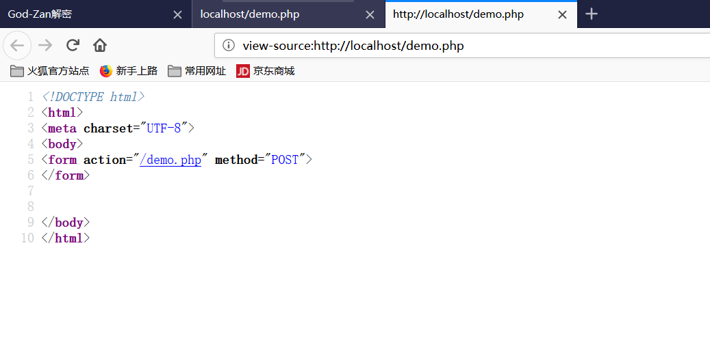

1、超级全局变量
超级全局变量在PHP 4.1.0之后被启用, 是PHP系统中自带的变量，在一个脚本的全部作用域中都可用。
$_SERVER[“PHP_SELF”];
PHP中预定义了几个超级全局变量（superglobals） ，这意味着它们在一个脚本的全部作用域中都可用。 你不需要特别说明，就可以在函数及类中使用。
PHP 超级全局变量列表:
1 | 1. $GLOBALS |
2、PHP $_SERVER
$_SERVER 是一个包含了诸如头信息(header)、路径(path)、以及脚本位置(script locations)等等信息的数组。这个数组中的项目由 Web 服务器创建。不能保证每个服务器都提供全部项目；服务器可能会忽略一些，或者提供一些没有在这里列举出来的项目。
1 | <?php |
3、$_SERVER[’PHP_SELF’]的跨站脚本攻击
$_SERVER[‘PHP_SELF’]是PHP语言中的“服务器端系统变量”，它的值是当前php文件相对于网站根目录的位置地址.
比如当
1 | <?php |
正常访问是这样的
显然这样可以很方便XSS，因为直接echo在页面上，所以只需要在尾部加上/<script>alert("Hello")</script>即可，建议大家先URL加密一次，不过问题不大
当然正常的代码不会直接输出在界面上，但是当开发人员一个表单的在action本页面，则可能会
1 | <form action="<?php echo $_SERVER["PHP_SELF"];?>"method="POST"> |
正常访问是这样的

但是 当你在尾部加上
1 | /"><script>alert('xss')</script> |
则由原来生成的
1 | <form action="/demo.php/{{多加入的参数}}" method="POST"> |
变成了，符号是自己加上去，表示区分
1 | <form action="/demo.php/{{"><script>alert('xss')</script>}}" method="POST"> |
最终
1 | <form action="/demo.php/"><script>alert('xss')</script>" method="POST"> |
成功执行了XSS

3.1、解决办法-> 通过htmlentities($_SERVER[‘PHP_SELF’]);过滤
PS:$_SERVER 变量中的重要元素:
| 元素/代码 | 描述 |
|---|---|
| $_SERVER[‘PHP_SELF’] | 返回当前执行脚本的文件名。 |
| $_SERVER[‘GATEWAY_INTERFACE’] | 返回服务器使用的 CGI 规范的版本。 |
| $_SERVER[‘SERVER_ADDR’] | 返回当前运行脚本所在的服务器的 IP 地址。 |
| $_SERVER[‘SERVER_NAME’] | 返回当前运行脚本所在的服务器的主机名。 |
| $_SERVER[‘SERVER_SOFTWARE’] | 返回服务器标识字符串（比如 Apache/2.2.24）。 |
| $_SERVER[‘SERVER_PROTOCOL’] | 返回请求页面时通信协议的名称和版本（例如，“HTTP/1.0”）。 |
| $_SERVER[‘REQUEST_METHOD’] | 返回访问页面使用的请求方法（例如 POST）。 |
| $_SERVER[‘REQUEST_TIME’] | 返回请求开始时的时间戳（例如 1577687494）。 |
| $_SERVER[‘QUERY_STRING’] | 返回查询字符串，如果是通过查询字符串访问此页面。 |
| $_SERVER[‘HTTP_ACCEPT’] | 返回来自当前请求的请求头。 |
| $_SERVER[‘HTTP_ACCEPT_CHARSET’] | 返回来自当前请求的 Accept_Charset 头（ 例如 utf-8,ISO-8859-1） |
| $_SERVER[‘HTTP_HOST’] | 返回来自当前请求的 Host 头。 |
| $_SERVER[‘HTTP_REFERER’] | 返回当前页面的完整 URL（不可靠，因为不是所有用户代理都支持）。 |
| $_SERVER[‘HTTPS’] | 是否通过安全 HTTP 协议查询脚本。 |
| $_SERVER[‘REMOTE_ADDR’] | 返回浏览当前页面的用户的 IP 地址。 |
| $_SERVER[‘REMOTE_HOST’] | 返回浏览当前页面的用户的主机名。 |
| $_SERVER[‘REMOTE_PORT’] | 返回用户机器上连接到 Web 服务器所使用的端口号。 |
| $_SERVER[‘SCRIPT_FILENAME’] | 返回当前执行脚本的绝对路径。 |
| $_SERVER[‘SERVER_ADMIN’] | 该值指明了 Apache 服务器配置文件中的 SERVER_ADMIN 参数。 |
| $_SERVER[‘SERVER_PORT’] | Web 服务器使用的端口。默认值为 “80”。 |
| $_SERVER[‘SERVER_SIGNATURE’] | 返回服务器版本和虚拟主机名。 |
| $_SERVER[‘PATH_TRANSLATED’] | 当前脚本所在文件系统（非文档根目录）的基本路径。 |
| $_SERVER[‘SCRIPT_NAME’] | 返回当前脚本的路径。 |
| $_SERVER[‘SCRIPT_URI’] | 返回当前页面的 URI。 |
PHP中preg_match正则匹配的/u /i /s是什么意思
/u 表示按unicode(utf-8)匹配（主要针对多字节比如汉字）
/i 表示不区分大小写（如果表达式里面有 a， 那么 A 也是匹配对象）
/s 表示将字符串视为单行来匹配
[HCTF 2018]WarmUp
Orz啥都不说了，先膜两张图

上图中能发现两个特性，一个是win10真的金贵，一个就是demo?/../flag.txt能直接包含到flag.txt这是为啥呢
1 | 原理是demo?/被当作目录，之后上跳目录就好了（这个只适用于linux） |
OrZ
然后这个审计的题目
1 |
|
利用方法其实有两种，第一种是通过url两次编码的问题然后
1 | 整体的思路就是第一段不出现?，第二段又要出现?。 |
paylaod=file=source.php%253f/../../../../ffffllllaaaagggg
方法二就是用上面的那个漏洞,直接读取
1 | file=source.php?/../../../../../ffffllllaaaagggg |
“百度杯”CTF比赛 2017 二月场爆破-1
描述flag就在某六位变量中。
题目的意思是flag.php中定义了一个flag字符串 我们传递hello如果为那个变量 那个$$a就能把flag丢出来
1 |
|
爆破的话贼恶心，所以正确的姿势应该是 hello=GLOBALS,使用超全局变量GLOBALS
1 | http://138c4d7d85c04385b91b779047d5906d0a331ddc3728405a.changame.ichunqiu.com/?hello=GLOBALS |
“百度杯”CTF比赛 2017 二月场爆破-2
1 |
|
payload
1 | http://4139dc5d40184be4bb481b0d09226223d3815a7b2aea4456.changame.ichunqiu.com/?hello=file_get_contents('flag.php') |
“百度杯”CTF比赛 2017 二月场爆破-3
题目描述:这个真的是爆破
1 |
|
这样的题目本地调试最好了
其实就是传value要等于$_SESSION['whoami']，而后者每次会变，但是会显示出来
很沙雕的一点是substr(md5($value),5,4)==0,通过前面$value[0].$value[1]我们知道value是字符串数组，数组的md5是null，和0是弱相等的~所以第一次传?value[0]=e&value[1]=a,会返回两个字符 假设是bq 那就 ?value[0]=b&value[1]=q,十次就行，脚本写起来也简单
payload
1 | import requests |